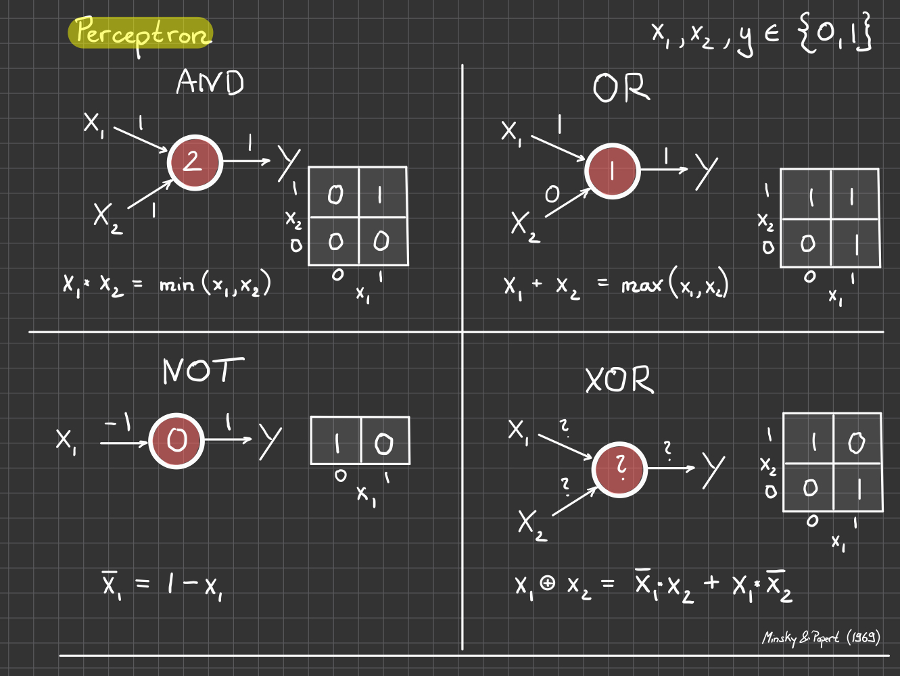

A neuron cell receives electrical signals (dendrites) and passes it to other neurons (axon). Source: wikipedia
Neuron Models
McCulloch and Pitts (1943)
A brief history of neuron++ models
McCulloch and Pitts (1943): Neurons as Boolean Gates (synaptic weights and activation thresholds)
Hebbs (1949): Neurons can learn weights; “fire together & wire together”
Rosenblatt (1957): A mathematical learning rule + a machine
An Application: Binary Classification
Mark I Perceptron (1958). Distinguish pairs of letters (20x20 pixels) - with 80% accuracy!
Perceptions and Citations
– Mechanisation of Thought Processes –
Rosenblatt (1957): “Devices of this sort are expected ultimately to be capable of concept formation, language translation, collation of military intelligence, and the solution of problems through inductive logic.”
New York Times, July 7 1958
Boolean Gates & AI Winter
How to adjust weights and thresholds to calculate Boolean functions?

Boolean Gates with weights and thresholds. \(x_1, x_2, y \in \{0,1\}\).
An Algorithm
Goal given a Boolean truth table \((x,y) \to\) find weights \(w_l\) and thresholds \(b_l\)
Perceptron Calculation. A linear collection function + a non-linear activation function.
Learning = updating weights
\[
w_{l} \to w_{l} + \alpha (y - \hat y)*x_l
\]
all Boolean \(x_l, y, \hat y \in \{0, 1\}\)
modified Hebbs learning: weights are updated only if target \(y\) is not yet reached: \(y \ne \hat y\)
online learning: one sample at a time
BUT: solution only for linearly separated data (not for XOR)
Classification
For continuous \(x\), each neuron in a perceptron defines a (linear) decision boundary based on the value of \(z\).
\[
z = w_1 x_1 + w_2 x_2 + b
\]
Decision Boundary for continous \(x\)
Universality with Multiple Layers
With a multilayer perceptron (MLP) it is possible to calculate XOR, or any Boolean function
Multi-Layer-Perceptron to calculate XOR. Source: wikipedia
BUT
simple perceptron algorithm only works for single layer and linearly separaberable data.
need new algorithm: Backpropagation (Rumelhart, Hinton, Williams; Nature 1986)
Complex Classification
Below I have hand-selected weights and thresholds for an MLP (with 3 hidden nodes) to create 3 decision boundaries that form a triangle.
Based on this I have sampled points \((x_1, x_2)\) and assigned 2 labels (0=outside triangle, 1=inside triangle)
Let’s explore if we can learn the known boundaries from just the data \((x,y)\).
We will discuss the algorithm later, but here I just want to illustrate that it seems to work.
Code
import torchimport torch.nn as nnimport numpy as npimport matplotlib.pyplot as plt# some convenience functionsfrom lecture_utils.helper import detect_devicefrom lecture_utils.perceptron_utils import plot_data_and_boundaries, plot_decision_boundary, get_data, train_model# define 3 decision boundaries with W and bW = np.array([[2,-1],[-2,-1],[0,1]])b = np.array([1,1,1]).reshape(1,-1)# sample data and assign labels based on known boundariesns =10000X, labels = get_data(W, b, n_samples = ns)# plot data and boundariesfig, ax = plt.subplots(1, 1, figsize=(10, 10))title_str =f'True Boundaries and {ns} data points'plot_data_and_boundaries(ax, X.cpu(), labels.cpu(), W, b, title=title_str)plt.show()
boundary parameters (w1, w2, b) specify boundary equation: w1 x1 + w2 x2 + b = 0
Code
# a simple model with minimal number of layers (see data generation)class MinimalModel(nn.Module):def__init__(self):super(MinimalModel, self).__init__()self.hidden_layer = nn.Linear(2, 3)self.output_layer = nn.Linear(3, 1)def forward(self, x): x = torch.sigmoid(self.hidden_layer(x)) # sigmoid just for positivity x = torch.sigmoid(self.output_layer(x)) # Sigmoid activation for classificationreturn x# a complex model with 2 hidden layersclass ComplexModel(nn.Module):def__init__(self):super(ComplexModel, self).__init__()self.hidden1 = nn.Linear(2, 16)self.hidden2 = nn.Linear(16,32)self.output_layer = nn.Linear(32, 1)def forward(self, x): x = torch.sigmoid(self.hidden1(x)) x = torch.sigmoid(self.hidden2(x)) x = torch.sigmoid(self.output_layer(x)) # Sigmoid activation for classificationreturn x
Code
device = detect_device()n_epochs =9000model = MinimalModel().to(device)X = X.to(device)labels = labels.to(device)minimal_model, minimal_loss = train_model(model, X, labels, n_epochs=n_epochs, lr=0.001)# for the minimal model, we can actually interprete the parameters# so I store them here for laterWp = minimal_model.state_dict()['hidden_layer.weight'].cpu().numpy()bp = minimal_model.state_dict()['hidden_layer.bias'].cpu().numpy().reshape(1,-1)model = ComplexModel().to(device)complex_model, complex_loss = train_model(model, X, labels, n_epochs=n_epochs, lr=0.001)
True Decision Boundaries and Predicted Decision Boundaries for 2 Models
Note
for the simple model (1 hidden layer with 3 neurons) we can still interprete the parameters as the linear boundaries.
complex model (2 hidden layers with 16 + 32 neurons) is difficult to interpret: “black box”
complex model “better”: smaller loss, higher confidence
the number of training iterations was quite high for both models (10,000)
parameterization not unique (scaling factors and order)
Yuval Harari: “intelligence is not about the truth, it’s about the ability to solve problems”
Universalities
A multi-layered perceptron can
calculate any Boolean function
calculate any decision boundary (not just XOR and triangles)
approximate any continuous function with arbitrary accuracy
Source Code
---title: Perceptronjupyter: pytorchcategories: - perceptron - decision boundaries - neurondescription: Brain Connectionsimage: images/Rosenblatt.jpgcode-fold: true---## Real Neurons## Neuron Models::: callout-note### A brief history of neuron++ models- McCulloch and Pitts (1943): Neurons as Boolean Gates (synaptic weights and activation thresholds)- Hebbs (1949): Neurons can learn weights; "fire together & wire together"- Rosenblatt (1957): A mathematical learning rule + a machine :::## An Application: Binary Classification## Perceptions and Citations*-- Mechanisation of Thought Processes --*Rosenblatt (1957): "Devices of this sort are expected ultimately to be capable of concept formation, language translation, collation of military intelligence, and the solution of problems through inductive logic."## Boolean Gates & AI WinterHow to adjust weights and thresholds to calculate Boolean functions?## An Algorithm**Goal** given a Boolean truth table $(x,y) \to$ find weights $w_l$ and thresholds $b_l$<!-- https://upload.wikimedia.org/wikipedia/commons/thumb/c/c6/Artificial_neuron_structure.svg/2560px-Artificial_neuron_structure.svg.png) -->::: callout-note### Learning = updating weights$$w_{l} \to w_{l} + \alpha (y - \hat y)*x_l$$- all Boolean $x_l, y, \hat y \in \{0, 1\}$- modified Hebbs learning: weights are updated only if target $y$ is not yet reached: $y \ne \hat y$- online learning: one sample at a time- BUT: solution only for linearly separated data (not for XOR):::## ClassificationFor continuous $x$, each neuron in a perceptron defines a (linear) decision boundary basedon the value of $z$.$$z = w_1 x_1 + w_2 x_2 + b $$## Universality with Multiple LayersWith a multilayer perceptron (MLP) it is possible to calculate XOR, or **any** Boolean function::: callout-note### BUT- simple perceptron algorithm only works for single layer and linearly separaberable data.- need new algorithm: **Backpropagation** (Rumelhart, Hinton, Williams; Nature 1986):::## Complex ClassificationBelow I have hand-selected weights and thresholds for an MLP (with 3 hidden nodes) tocreate 3 decision boundaries that form a triangle.Based on this I have sampled points $(x_1, x_2)$ and assigned 2 labels (0=outside triangle, 1=inside triangle)Let's explore if we can learn the known boundaries from just the data $(x,y)$.We will discuss the algorithm later, but here I just want to illustrate that it seems to work.```{python}#| label: plot_data#| code-fold: true#| fig-cap: "boundary parameters (w1, w2, b) specify boundary equation: w1 x1 + w2 x2 + b = 0"import torchimport torch.nn as nnimport numpy as npimport matplotlib.pyplot as plt# some convenience functionsfrom lecture_utils.helper import detect_devicefrom lecture_utils.perceptron_utils import plot_data_and_boundaries, plot_decision_boundary, get_data, train_model# define 3 decision boundaries with W and bW = np.array([[2,-1],[-2,-1],[0,1]])b = np.array([1,1,1]).reshape(1,-1)# sample data and assign labels based on known boundariesns =10000X, labels = get_data(W, b, n_samples = ns)# plot data and boundariesfig, ax = plt.subplots(1, 1, figsize=(10, 10))title_str =f'True Boundaries and {ns} data points'plot_data_and_boundaries(ax, X.cpu(), labels.cpu(), W, b, title=title_str)plt.show()``````{python}#| label: define_models#| code-fold: true# a simple model with minimal number of layers (see data generation)class MinimalModel(nn.Module):def__init__(self):super(MinimalModel, self).__init__()self.hidden_layer = nn.Linear(2, 3)self.output_layer = nn.Linear(3, 1)def forward(self, x): x = torch.sigmoid(self.hidden_layer(x)) # sigmoid just for positivity x = torch.sigmoid(self.output_layer(x)) # Sigmoid activation for classificationreturn x# a complex model with 2 hidden layersclass ComplexModel(nn.Module):def__init__(self):super(ComplexModel, self).__init__()self.hidden1 = nn.Linear(2, 16)self.hidden2 = nn.Linear(16,32)self.output_layer = nn.Linear(32, 1)def forward(self, x): x = torch.sigmoid(self.hidden1(x)) x = torch.sigmoid(self.hidden2(x)) x = torch.sigmoid(self.output_layer(x)) # Sigmoid activation for classificationreturn x``````{python}#| label: run#| code-fold: truedevice = detect_device()n_epochs =9000model = MinimalModel().to(device)X = X.to(device)labels = labels.to(device)minimal_model, minimal_loss = train_model(model, X, labels, n_epochs=n_epochs, lr=0.001)# for the minimal model, we can actually interprete the parameters# so I store them here for laterWp = minimal_model.state_dict()['hidden_layer.weight'].cpu().numpy()bp = minimal_model.state_dict()['hidden_layer.bias'].cpu().numpy().reshape(1,-1)model = ComplexModel().to(device)complex_model, complex_loss = train_model(model, X, labels, n_epochs=n_epochs, lr=0.001) ``````{python}#| label: plot#| code-fold: true#| fig-cap: True Decision Boundaries and Predicted Decision Boundaries for 2 Modelsfig, axes = plt.subplots(2, 2, figsize=(10, 5))title_str =f'True Boundaries and {ns} data points'plot_data_and_boundaries(axes[0][0], X.cpu(), labels.cpu(), W, b, title=title_str)title_str =f'Predicted Boundaries from Minimal Model'plot_data_and_boundaries(axes[0][1], X.cpu(), labels.cpu(), Wp, bp, title=title_str)title_str =f"Minimal Model. Loss = {minimal_loss:.4f}"plot_decision_boundary(axes[1][0], minimal_model, -2, 2, -2, 2, X, labels, title_str)title_str =f"Complex Model. Loss = {complex_loss:.4f}"plot_decision_boundary(axes[1][1], complex_model, -2, 2, -2, 2, X, labels, title_str)plt.tight_layout()plt.show()```::: callout-note- for the simple model (1 hidden layer with 3 neurons) we can still interprete the parameters as the linear boundaries.- complex model (2 hidden layers with 16 + 32 neurons) is difficult to interpret: "black box"- complex model "better": smaller loss, higher confidence- the number of training iterations was quite high for both models (10,000)- parameterization not unique (scaling factors and order):::Yuval Harari: "intelligence is not about the truth, it's about the ability to solve problems"## UniversalitiesA multi-layered perceptron can- calculate **any** Boolean function- calculate **any** decision boundary (not just XOR and triangles)- approximate **any** continuous function with arbitrary accuracy